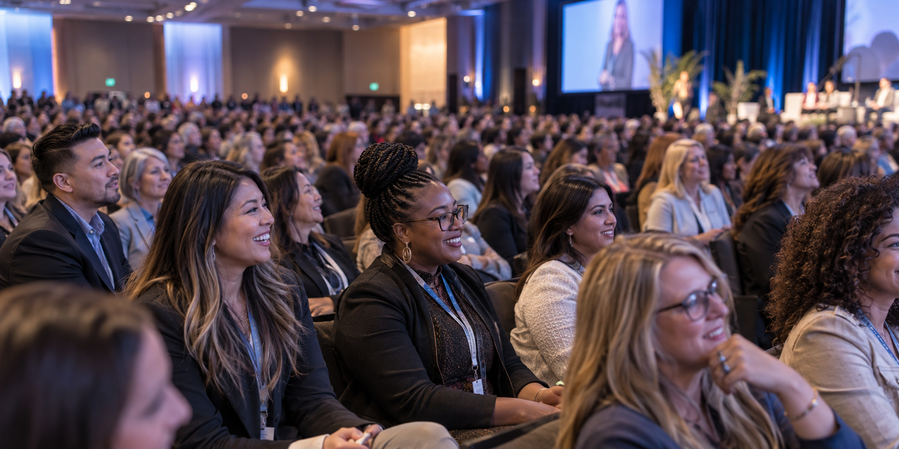

Start here
Whether you lead a state center or are looking for your state's data, there is a place for you in the network.
A national network of 45+ nursing workforce entities reaching more than 4 million nurses across the nation.
Whether you lead a state center or are looking for your state's data, there is a place for you in the network.
Nurses and healthcare leaders come together to share creative models of practice, workforce data analysis and interpretation, and innovations in nursing education.

Our values: Collaboration, Inclusivity, Credibility and Objectivity.
A group of nurse workforce entities addressing the nursing shortage within their states and contributing to the national effort.

The National Forum of State Nursing Workforce Centers envisions a well-prepared, representative, and responsive nursing workforce by convening expertise, supporting research, and nurse-forward strategy.
The National Forum of State Nursing Workforce Centers leads a network of experts dedicated to ensuring a robust nursing workforce.
Collaboration, Inclusivity, Credibility and Objectivity
We are a group of nurse workforce entities that focuses on addressing the nursing shortage within their states and contributes to the national effort to assure an adequate supply of qualified nurses to meet the health needs of the US population. We support the advancement of new as well as existing nurse workforce initiatives and share best practices in nursing workforce research, workforce planning, workforce development, and formulation of workforce policy.
What exactly is a state nurse workforce entity? These state initiatives are made up of people who work to increase the supply of nurses and resolve the critical nursing shortage. While organizational structures, funding sources, and entity names vary, these state nurse workforce entities are commonly referred to as “Centers.” The concept of “Taking the Long View” reflects the focus of workforce efforts being transformed from ‘quick fixes’ to long-range strategic planning.
The National Forum’s Board of Directors represent leaders from 7 states.
View the current Board of Directors →The National Forum is a proud member of the Nursing Community Coalition and the Interorganizational Collaborative on Nursing Statistics (ICONS).
 Join our national network
Join our national networkWe invite anyone who is interested in learning more about the National Forum and state-level nursing workforce throughout the United States to become a subscriber.
For State Representative, Associate Organization and Associate Individual Subscribers.
Sign in (Wild Apricot) →Our subscriber recognition program celebrates the success of all of our network.
Recognition program →Eligibility, benefits and the list of current Associate Organization Subscribers.
Read the FAQs →
Hyatt Regency Minneapolis · 1300 Nicollet Mall, Minneapolis, MN 55403
Nurses and healthcare leaders will come together to share creative models of practice, workforce data analysis and interpretation, and innovations in nursing education to change the nursing workforce game and address critical workforce development issues facing our nation.
Our hands-on pre-conference workshop will feature 4 national data experts. These 2-hour sessions will provide a hands-on opportunity to improve skills to evaluate nursing workforce needs. Registration is an add-on to the conference registration.
{{ f.a }}
This activity is jointly provided by the Colorado Center for Nursing Excellence, approved as a provider of nursing continuing professional development by the Colorado Nurses Association.
The majority of states have a nurse workforce initiative. Choose a state to see its center's latest publications, policy briefs and other resources.
Or browse the map of State Representative Subscribers.
Minimum data sets, the national workforce study, the journal and the reports our network publishes.

Our State Representative Subscribers have been hard at work publishing cutting-edge research and programmatic publications in the last two years.
All 21 publications →{{ p.cite }}
{{ p.journal }}For questions or more information about the National Forum of State Nursing Workforce Centers.
Patricia Moulton Burwell, PhD
Director, National Forum of State Nursing Workforce Centers
info@nursingworkforcecenters.org
We aim to meet WCAG 2.1 Level AA. If you encounter a barrier on this site, use this form or email us and we will respond within two business days.
A national network of 45+ nursing workforce entities reaching more than 4 million nurses.
nursing workforce entities in the network
nurses reached across the nation
areas of impact, from PreK3-12 pipeline to federal policy
Minimum Data Sets first recommended
Pre-conference data workshop Sunday, June 21. Room block cut-off May 29.
Details and registration →We are a group of nurse workforce entities that focuses on addressing the nursing shortage within their states and contributes to the national effort to assure an adequate supply of qualified nurses to meet the health needs of the US population. We support the advancement of new as well as existing nurse workforce initiatives and share best practices in nursing workforce research, workforce planning, workforce development, and formulation of workforce policy.
What exactly is a state nurse workforce entity? These state initiatives are made up of people who work to increase the supply of nurses and resolve the critical nursing shortage. Activities include data collection and analysis, publication of reports and information, as well as recommendations of changes necessary to resolve the nursing shortage. While organizational structures, funding sources, and entity names vary, these state nurse workforce entities are commonly referred to as “Centers.”
The National Forum is a proud member of the Nursing Community Coalition and the Interorganizational Collaborative on Nursing Statistics (ICONS), which is in the process of re-starting.
We invite anyone who is interested in learning more about the National Forum and state-level nursing workforce throughout the United States to become a subscriber.
For State Representative, Associate Organization and Associate Individual Subscribers.
Sign in ↗The list of organizations across the nursing workforce continuum in the network.
View list →Our subscriber recognition program celebrates the success of all of our network.
Recognition page →1300 Nicollet Mall, Minneapolis, MN 55403 · Pre-conference workshop Sunday, June 21, 1:00 PM
Conference goal: Nurses and healthcare leaders will come together to share creative models of practice, workforce data analysis and interpretation, and innovations in nursing education to change the nursing workforce game and address critical workforce development issues facing our nation.
Registration is an add-on to the conference registration.
{{ f.a }}
State publications, policy briefs and other resources from State Representative Subscribers. Map of State Representative Subscribers
Our State Representative Subscribers have been hard at work publishing cutting-edge research and programmatic publications in the last two years.
Patricia Moulton Burwell, PhD
Director, National Forum of State Nursing Workforce Centers
info@nursingworkforcecenters.org
This site targets WCAG 2.1 Level AA. Report a barrier using the form and we will respond within two business days.
We collect only what you send us through this form or subscription sign-up. Read the privacy policy.
June 22–24, 2026 · Hyatt Regency Minneapolis. Pre-conference data workshop June 21. Keynotes by Rachel L. Minahan and Olga Yakusheva.
45+ nursing workforce entities reaching more than 4 million nurses across the nation.
About the National Forum →Our values: Collaboration, Inclusivity, Credibility and Objectivity.
The National Forum of State Nursing Workforce Centers envisions a well-prepared, representative, and responsive nursing workforce by convening expertise, supporting research, and nurse-forward strategy.
The National Forum of State Nursing Workforce Centers leads a network of experts dedicated to ensuring a robust nursing workforce.
Collaboration, Inclusivity, Credibility and Objectivity
We are a group of nurse workforce entities that focuses on addressing the nursing shortage within their states and contributes to the national effort to assure an adequate supply of qualified nurses to meet the health needs of the US population. We support the advancement of new as well as existing nurse workforce initiatives and share best practices in nursing workforce research, workforce planning, workforce development, and formulation of workforce policy. We share information in three major ways: through publications, via annual conferences, and by way of this virtual network.
What exactly is a state nurse workforce entity? These state initiatives are made up of people who work to increase the supply of nurses and resolve the critical nursing shortage. While organizational structures, funding sources, and entity names vary, these state nurse workforce entities are commonly referred to as “Centers.” The concept of “Taking the Long View” reflects the focus of workforce efforts being transformed from ‘quick fixes’ to long-range strategic planning.
The National Forum’s Board of Directors represent leaders from 7 states. View the current Board of Directors →
Member of the Nursing Community Coalition and the Interorganizational Collaborative on Nursing Statistics (ICONS).
We invite anyone who is interested in learning more about the National Forum and state-level nursing workforce throughout the United States to become a subscriber.
{{ t.who }}
1300 Nicollet Mall, Minneapolis, MN 55403
Full refund through June 10 when ticket sales close. Your ticket will be emailed after purchase.
Register1300 Nicollet Mall, Minneapolis, MN 55403. Discounted room block cut-off: May 29, 2026.
Book hotel roomExhibit tables are Bronze Sponsorship. Sponsorship registration is open until May 15, 2026.
Sponsorship portalConference goal: Nurses and healthcare leaders will come together to share creative models of practice, workforce data analysis and interpretation, and innovations in nursing education to change the nursing workforce game and address critical workforce development issues facing our nation.
Our hands-on pre-conference workshop will feature 4 national data experts. Registration is an add-on to the conference registration.
{{ f.a }}
State publications, policy briefs and other resources from State Representative Subscribers. Map of State Representative Subscribers
Our State Representative Subscribers have been hard at work publishing cutting-edge research and programmatic publications in the last two years.
Patricia Moulton Burwell, PhD
Director, National Forum of State Nursing Workforce Centers
info@nursingworkforcecenters.org
This site targets WCAG 2.1 Level AA. If you encounter a barrier, tell us through this form or by email and we will respond within two business days.
PrivacyWe collect only what you send us through this form or subscription sign-up. Privacy policy
Try next: "set the colors to the NF logo's exact hex values" · "give 2b the centered hero from 2a" · "mobile versions of all three"